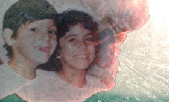

Lavashak
Narges Kalhor
Germany 2014
27 min – HD – Farsi OV Engl ST
There are moments in which you have to make a decision. Do you stay in a situation of conflict, or go? Maybe after a while you can reflect on these moments, but you never get to re-live them. I grew up in Teheran with my cousin, Saeid. Five months after I left Iran for good, he was buried under an avalanche and killed. Every month, I receive a parcel from home. It always contains my favorite childhood sweets – the ones I used to eat with Saeid after school. This time, though, there’s something else in the parcel: three DVDs showing the final minutes of Saeid’s life. – Narges Kalhor
wednesday 14 oct 6.30 pm werkstattkino
Narges Kalhor (1984 in Teheran, Iran). Studied at the University for Television and Film in Teheran. 2010 Study documantary film at the University for Television and Film Munich.
Films (selection) We must have died! 2006 – Die Egge 2008 – München-Teheran 2010 – Zwei Gesichter 2013 – Shoot me! 2013 – Kafan 2014 (9. UX) – Neda 2014 (10. UX) – Lavaschak 2014 (10. UX)